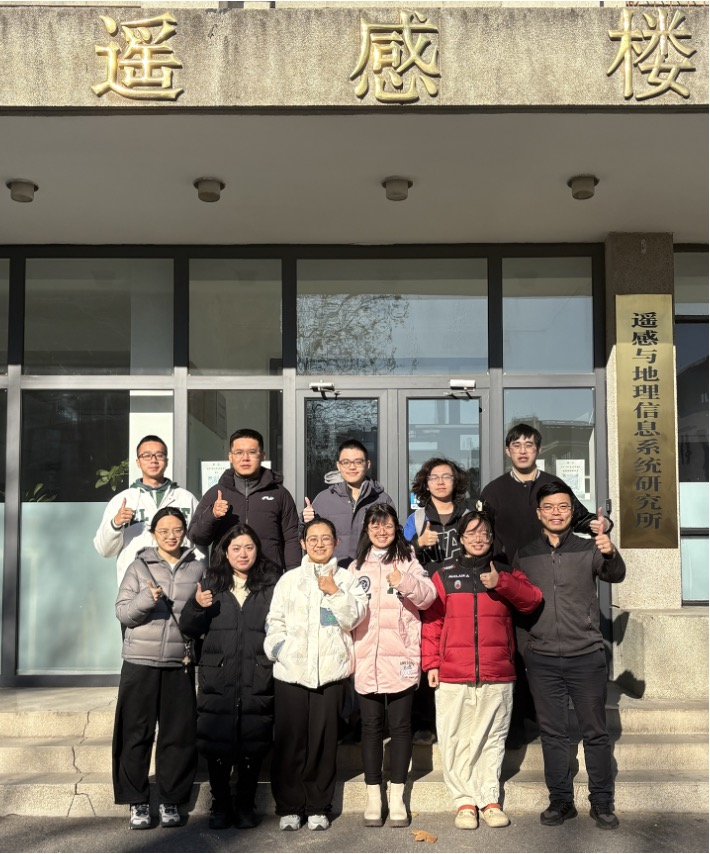

Team
FengYun satellite Atmospheric composition Infrared Retrieval (FY-AIR) data portal @ Peking University
Group photo

Project lead
Dr. Zeng is currently an Assistant Professor at Peking University (PKU) in Beijing, China. He was an Associate Research Scientist (Nov. 2021 - Jan 2022) at Caltech, Assistant Researcher at JIFRESSE of UCLA (Mar. 2019 - Oct. 2021), and Postdoc researcher at Caltech (Feb 2017 - Feb. 2019) after receiving his PhD in 2016 from CUHK in Hong Kong. His research interests include radiative transfer and inverse modeling in atmospheric remote sensing. He received the Richard M. Goody Award by Elsevier/JQSRT in 2023 for his contributions to atmospheric remote sensing. He is currently leading a research group at Peking University to measure global greenhouse gases and air pollutants and understand their evolution using China's FengYun series satellites. He is an editor of the journal Atmospheric Measurement Techniques and an associate editor of the journal Remote Sensing of Environment.
Current Members
- Mengya Sheng (postdoc)
- Shangyi Liu (PhD student)
- Yingjun Zheng (PhD student)
- Shan Han (Visiting PhD student)
- Jiancong Hua (Msc student)
- Runyi Zhou (Msc student)
- Yuhan Zhang (Incoming Msc student)
- Sirui Wu (Visiting master student at NUS)
Past Members
- Huidong Wang (Research Assistant)
- Hao Song (Visiting PhD student)
- to be added